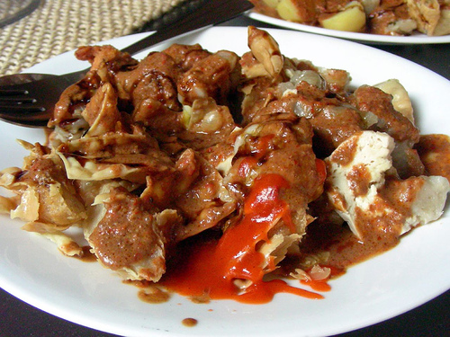

Siomay Batagor

Image and Article source
Siomay merupakan jajanan yang dibuat dari bahan dasar berupa tahu putih
yang diberi tambahan udang, ikan tenggiri dan tepung tapioka. Siomay ini
biasa disajikan dengan keadaan masih panas diberi siraman bumbu kacang
yang pedas dan kecap manis yang kental. Dalam penyajiannya siomay ini
diberi tambahan irisan jeruk nipis untuk perasan, sedangkan batagor adalah
sejenis dengan siomay namun cara penyajiannya dengan digoreng. Usaha
siomay ini bisa dijalankan pada saat waktu luang.
Bahan-bahan / Ingredients
Bahan Kulit :
- 10 lembar kulit pangsit
- 5 buah tahu putih, potong ukuran kecil, belah dua segitiga
- Minyak goreng
Bahan Batagor :
- 250 gr ikan tenggiri haluskan
- 3 batang daun bawang iris halus
- 1/2 sdt penyedap rasa
- 3 siung bawang putih
- 1/2 std kaldu ayam bubuk
- 1 sdt garam
- 1/2 sdt merica bubuk
- 2 sdt gula pasir
- 20 gr tepung terigu protein sedang
- 115 gr tepung sagu
Bahan Sambal Kacang Batagor :
- 300 gr kacang tanah kulit digoreng
- 6 siung bawang putih goreng
- 8 buah cabai merah keriting, goreng
- 2 sdt garam
- 6 sdm gula merah
- 650 ml air hangat
- 4 sdm air asam jawa
Bahan Pelengkap Batagor :
- 5 buah jeruk limau
- 75 ml kecap manis
Cara Membuat
-
Campurkan ikan tenggiri, bawang putih, daun bawang, kaldu ayam bubuk,
penyedap rasa, merica bubuk, garam, dan gula pasir. Uleni sampai rata.
-
Masukan putih telur dan air es, uleni sampai rata. Beri tambahan tepung
sagu serta tepung terigu, aduk sampai menjadi adonan yang kalis.
- Bagi adonan menjadi 2, masukan bagian isi dalam tahu putih.
-
Sisanya dimasukan dalam kulit pangsit. Rekatkan dengan air, bentuk segi
empat.
-
Kukus dengan wakru 30 menit dengan menggunakan api sedang, lalu
dinginkan.
-
Goreng siomay serta batagor ke dalam minyak yang telah dipanaskan
menggunakan api sedang sampai matang.
-
Sambal Kacang : haluskan kacang tanah, cabai merah keriting, bawang
putih, gula merah dan garam, tuang air hangat. Masak sampai kental beri
tambahan air asam jawa, aduk sampai rata.
-
Batagor ini sebaiknya baru digoreng pada saat akan disajikan agar
menjadi renyah.
Cara membuat siomay batagor ini sangat mudah bukan, Anda bisa mencoba
membuatnya dirumah dan memberi tambahan yang pas sesuai dengan keinginan
supaya bisa lebih menarik.
Home